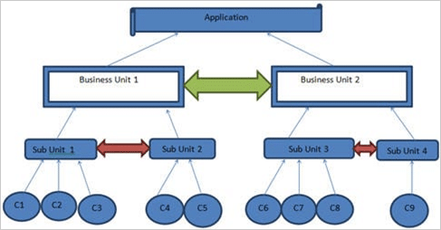
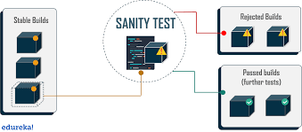
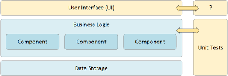
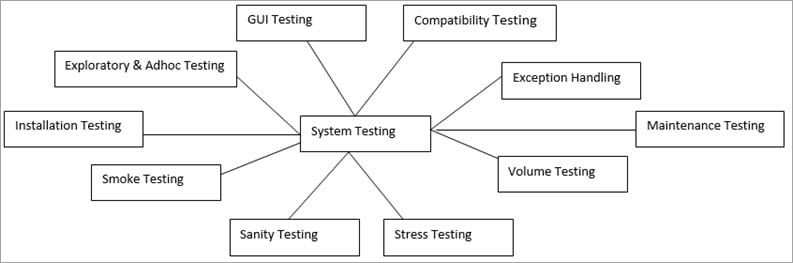
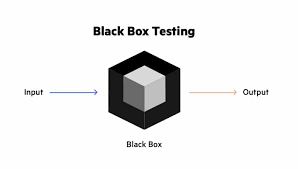

- Unit Testing
- Component Testing 
- Smoke Testing
- Sanity Testing 
- Regression Testing
- Integrated Testing
- API Testing
- UI Testing 
- System Testing 
- White-box Testing
- Black-box testing 

Unit testing is the process of checking small pieces of code to ensure that the individual parts of a program work properly on their own, speeding up testing strategies and reducing wasted tests.Software verification and validation method in which a programmer tests if individual units of source code are fit for use. It is usually conducted by the development team. Read More on Unit Testing
It is mostly performed by developers after the completion of unit testing. Component Testing involves testing of multiple functionalities as a single code and its objective is to identify if any defect exists after connecting those multiple functionalities with each other.
Testing technique similar to unit testing but with a higher level of integration - testing is done in the context of the application instead of just directly testing a specific method. Can be performed by testing or development teams.

This type of software testing validates the stability of a software application, it is performed on the initial software build to ensure that the critical functions of the program are working.Testing technique which examines all the basic components of a software system to ensure that they work properly. Typically, smoke testing is conducted by the testing team, immediately after a software build is made. Read More on Smoke Testing
Performed after bug fixes, sanity testing determines that the bugs are fixed and that no further issues are introduced to these changes. Testing technique which determines if a new software version is performing well enough to accept it for a major testing effort. It is performed by the testing teams. Read More on Sanity Testing

Regression testing is performed to determine if code modifications break an application or consume resourcesType of software testing that seeks to uncover software errors after changes to the program (e.g. bug fixes or new functionality) have been made, by retesting the program. It is performed by the testing teams. Read More on Regression Testing

Integration testing ensures that an entire, integrated system meets a set of requirements. It is performed in an integrated hardware and software environment to ensure that the entire system functions properly.
The phase in software testing in which individual software modules are combined and tested as a group. It is usually conducted by testing teams. Read More on Integration Testing

APIs, or Application Programming Interfaces, are the connecting tissue between different systems or layers of an application. Applications often have three layers: a data layer, a service (API) layer, and a presentation (UI) layer. The API layer contains the business logic of an application - the rules of how users can interact with services, data, or functions of the app. Because the API or service layer directly touches both the data layer and the presentation layer, it presents the sweet spot of continuous testing for QA and Development teams. While traditional testing has been focused on the UI, the advantages of API testing are becoming well known.
User interface testing, a testing technique used to identify the presence of defects is a product/software under test by using Graphical user interface [GUI].
Under System Testing technique, the entire system is tested as per the requirements. It is a Black-box type Testing that is based on overall requirement specifications and covers all the combined parts of a system.The process of testing an integrated hardware and software system to verify that the system meets its specified requirements. It is conducted by the testing teams in both development and target environment. Read More on System Testing

White Box Testing is based on the knowledge about the internal logic of an application’s code.It is also known as Glass box Testing. Internal software and code working should be known for performing this type of testing. Under these tests are based on the coverage of code statements, branches, paths, conditions, etcTesting technique based on knowledge of the internal logic of an application's code and includes tests like coverage of code statements, branches, paths, conditions. It is performed by software developers. Read More on White box Testing
Black box testing involves testing against a system where the code and paths are invisible.A method of software testing that verifies the functionality of an application without having specific knowledge of the application's code/internal structure. Tests are based on requirements and functionality. It is performed by QA teams. Read More on Black box Testing